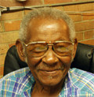
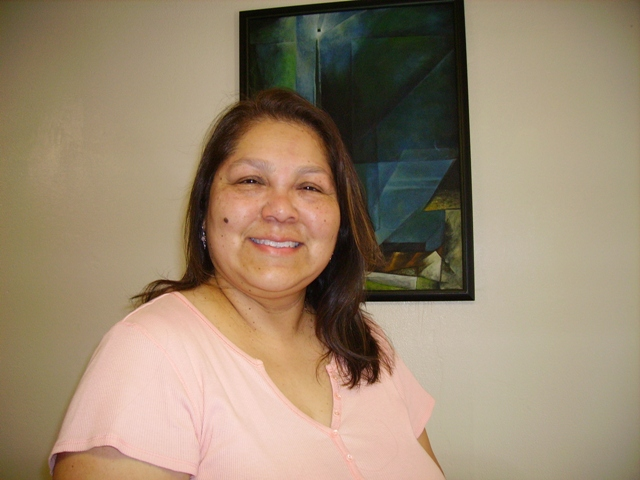

Advocacy Outreach
200 Depot Street,
P. O. Box 169, Elgin,
Texas 78621
Phone 512 281-4180
FAX 512 281-9599
Administrative Team
Beth Rolingson
Executive Director
beth@advocacyoutreach.org
Beth Rolingson is one of the original three co-founders of Advocacy Outreach in January 1992 and the first Executive Director. She attended the University of Houston and has a Legal Assistant Certification and Certification in Nonprofit Management from the University of Texas. Her former work experience includes victim advocacy for Family Crisis Center and client advocacy for Rural AIDS Services. Her former life experience includes tapestry weaving, raising angoras, and operating a handspun yard dyeworks. She now has the most beautiful rose garden in Webberville.
Damian Clark
Assistant Director
damian@advocacyoutreach.org
Patsy Hoffman
Office Manager, Special Projects Coordinator
patsy@advocacyoutreach.orgPatsy Hoffman worked in commercial broadcasting before retiring. She now works part time with Advocacy Outreach as the office manager and is a vital networker for our vision. Patsy is very active with the Elgin community as she belongs to Evision Elgin and on the board of the Friends of the Library, Library Advisory Board, Historic Review Board, Elgin Historical Association, and is acting treasurer of Elgin Cemetary Association.

Harvey Scroggins
ReceptionistHarvey Scroogins is retired, yet came to work for us through a collaborative effort with AARP.
Cidneye Godkin
Homelessness Prevention Advocate
cidneye@advocacyoutreach.orgCidneye Godkin has worked in the field of social services for more than 20 years. Her background includes experience in the fields of sexual assault, domestic violence, HIV/AIDS, migrant health, and homelessness. She was an organizer and facilitator of the Bastrop County International Women’s Day Celebration during its first decade, 2000 to 2010.
Anne Spanyers, MA, CMPI
Adult Education Coordinator
aws@advocacyoutreach.org
Anne Spanyers coordinates the educational programs for Advocacy Outreach. She has been a trainer for the Literacy Coalition of Central Texas (Literacy Advancement Initiative), and received the Certified Manager in Program Improvement from the Leadership Excellence Academy (National Adult Education Professional Development Consortium and ProLiteracy)
Our Instructors

Toni Aguirre
Beginning & Advanced ESL InstructorToni Aguirre has been with Advocacy Outreach since 2009, and started out as an Advanced ESL Instructor for the evening classes at Manor High School. She now teaches a Beginners ESL class during the day and teaches an Advanced ESL class during the evening. Toni is married and has a son. She has a Bachelor’s of Arts degree in Social Work with over 30 years of work experience in the Social Work field.
Carol Joseph
Austin Community College, Advanced English as a Second Language Instructor
joseph.carol@sbcglobal.netCarol Joseph works as our advanced ESL instructor for our Family Literacy Program through a partnership with Austin Community College.
Ethel Ellis
Early Childhood Development Center Director
ethel@advocacyoutreach.org
Ethel Ellis works as our Director of the Early Childhood Development Center and has worked for Advocacy Outreach for over 11 years. She has received certification in the Nurturing Program, trained in Partners for Literacy, Learning Games, Creative Curriculum and CDA training. Ethel administers assessments and PALS testing to our clients in order to teach appropriatly for each child. Ethel has multiple years of training in several areals of child development.
Haley Brian
Early Childhood Development Center InstructorHaley Brian grew up in the offices of Advocacy Outreach with a mother, grandmother, and various other relatives who volunteered and worked here. As a child she helped display and arrange the clothing and household goods which were available through the Advocacy Outreach Free Store. As a teen she worked as a volunteer aide at the Cats in Action summer day camp, a collaborative project of Advocacy Outreach, City of Elgin and Elgin ISD for “at-risk” children and later the Even Start Family Literacy summer program. Her background in High School Drama and her creative energy were an asset to the program during a summer production of “Where the Wild Things Are.” Now she teaches and takes care of children during day and evening classes at Advocacy Outreach. She is a college student at Austin Community College with plans to pursue a degree in Speech Pathology.